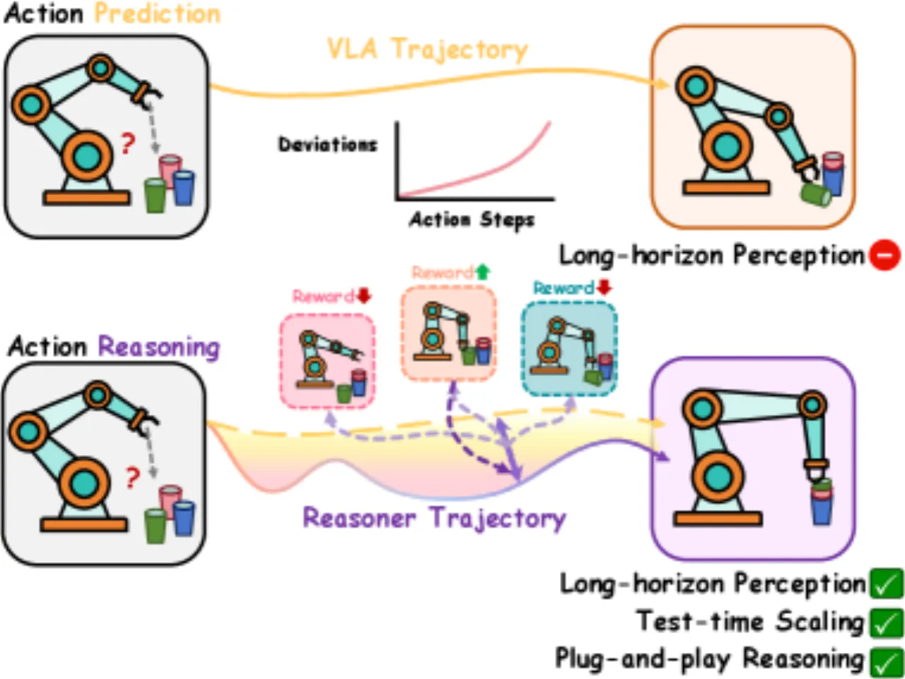
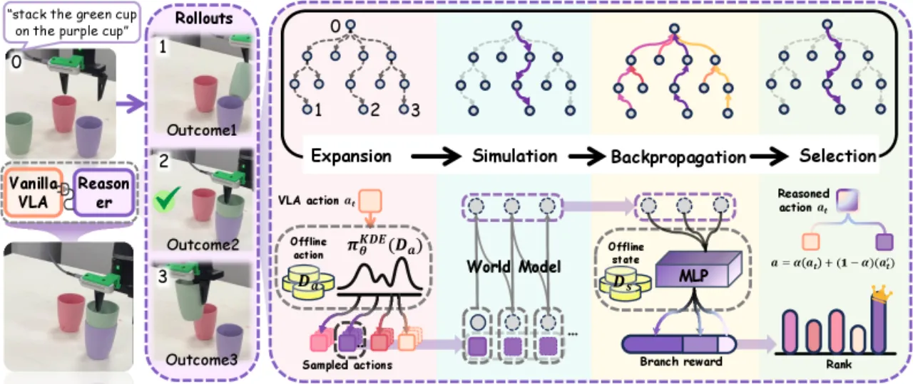
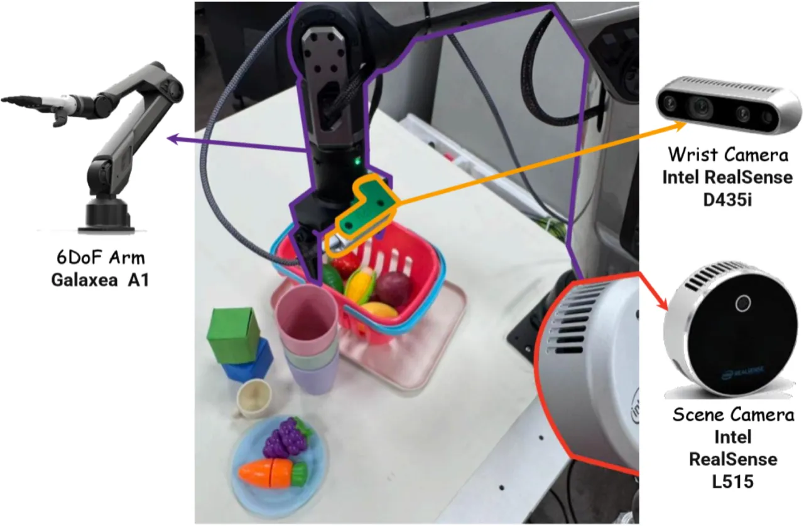
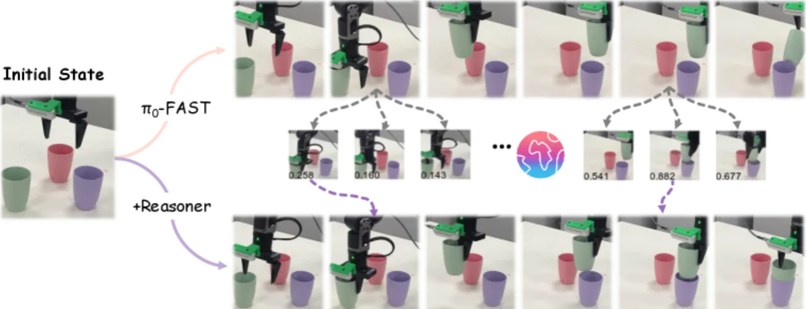
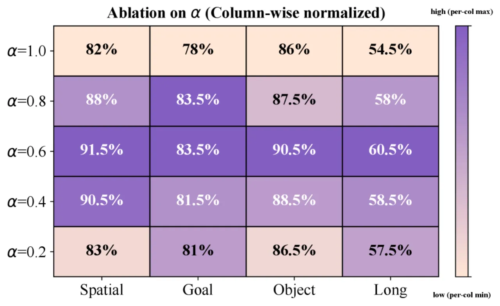
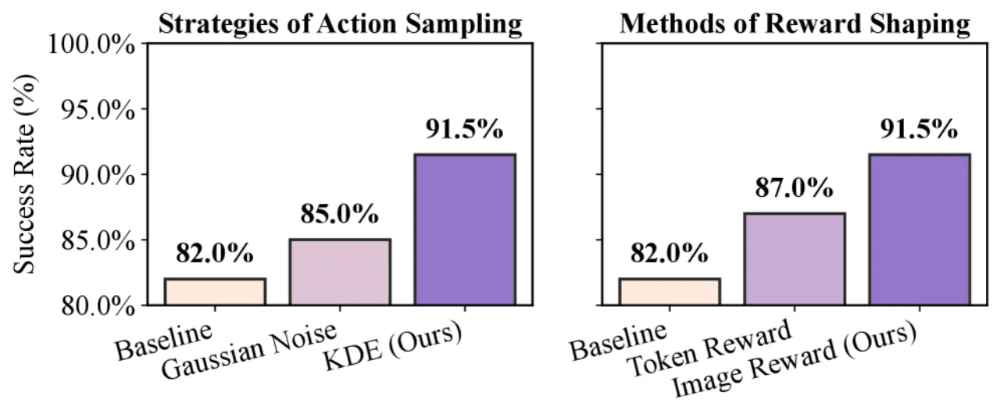

VLA-Reasoner 是一个即插即用框架，通过在线蒙特卡洛树搜索（MCTS）与学习型世界模型，赋予已有 VLA 模型在测试时探索长视野动作轨迹的能力，从而避免短视决策导致的累积偏差，在仿真和真实机器人任务上均显著提升操作成功率。
当前 Vision-Language-Action（VLA）模型在机器人部署时存在"短视"问题：每一步只预测当前最优动作，不考虑后续轨迹后果，导致误差随时间累积，长视野任务失败率高。
"Can VLAs explore the long-horizon future influence of actions at test time, and decide the optimal action?"

VLA 模型继承了大规模视觉-语言预训练的泛化能力，在机器人模仿学习上取得了显著成果。然而，这类模型在部署阶段仍然脆弱——它们将机器人控制当作一步步的局部决策，忽略了动作对未来状态的长链式影响。对于需要精确堆叠、抓取或多步协调的任务，即使微小的偏差也会随时间放大，最终导致任务失败。
VLA-Reasoner 的核心思路是：不修改 VLA 权重，仅在测试时外挂一套基于 MCTS 的规划模块，通过学习型世界模型模拟未来状态，以 value function 引导搜索，从而找到长视野更优的动作。
VLA-Reasoner 由三个核心模块组成：基于 MCTS 的在线动作搜索、Kernel Density Estimation（KDE）高效采样机制、以及基于视觉的轻量 value network。最终动作由 VLA 预测与 MCTS 结果加权融合得到。

MCTS 以当前 VLA 的预测动作为根节点，执行四阶段循环：
s(i+1) = W(a(i), s(i))，将动作轨迹转化为视觉观测序列。Q(o(i)) = [N(o(i))·v(i) + Σ N(o(j))·Q(o(j))] / [N(o(i)) + Σ N(o(j))]反复查询 VLA 成本高昂。VLA-Reasoner 用 KDE 对离线数据中的动作分布建模：π(a) = (1/N) Σ K_h(a − a(i))，以概率密度作为访问次数的代理，在保留 VLA 先验的同时大幅减少对模型的实时调用。
轻量 ResNet-34 + 2-layer MLP 在离线轨迹上训练，以线性插值帧位置为 ground-truth value（MSE loss），为中间树节点提供稠密反馈。最终执行动作为：
a(t) = α · a(VLA) + (1−α) · a(Reasoner)其中超参数 α 控制原始 VLA 预测与树搜索结果之间的平衡。消融实验显示 α = 0.6 时效果最佳，适度融合优于完全依赖任一来源。

在仿真环境（LIBERO、SimplerEnv）和真实机器人（Galaxea-A1）上与 OpenVLA、Octo-Small、SpatialVLA、π0-FAST 等多个 VLA 基线对比，评估指标为任务成功率（success rate）。
| 基线 VLA | 原始成功率 | + VLA-Reasoner | 绝对提升 |
|---|---|---|---|
| OpenVLA-SFT | 76.0% | 81.0% | +5.0% |
| Octo-Small | 26.5% | 37.3% | +9.8% |
| SpatialVLA | 34.0% | 41.8% | +7.8% |
值得注意的是，VLA-Reasoner 在不进行大规模后训练的前提下，使部分基线达到了与当前最优变体相当的性能水平。
| 基线 VLA | 原始成功率 | + VLA-Reasoner | 相对提升 |
|---|---|---|---|
| OpenVLA-7B | 22% | 41% | +86.4% |
| π0-FAST（商业模型） | 64% | 74% | +15.6% |



当前方案在部署前需要针对目标任务训练世界模型、KDE 分布估计器和 value network，增加了新任务的配置成本，不支持零样本直接迁移。
MCTS 的搜索质量高度依赖学习型世界模型对未来视觉状态的预测是否准确。论文指出"better visual foresight models would improve feedback quality"——世界模型误差会传导为错误的 value 信号，影响最终动作选择。
当前的离线线性插值方式为 value 提供稠密监督，但较为启发式。论文认为"more principled data-driven or learning-based methods"有望带来更稳定的搜索效果。
实验使用 RTX 4090 进行实时 GPU 推理。在计算资源受限的嵌入式机器人平台上，当前框架的可扩展性尚不明确，面向低算力平台的适配是未来工作方向之一。